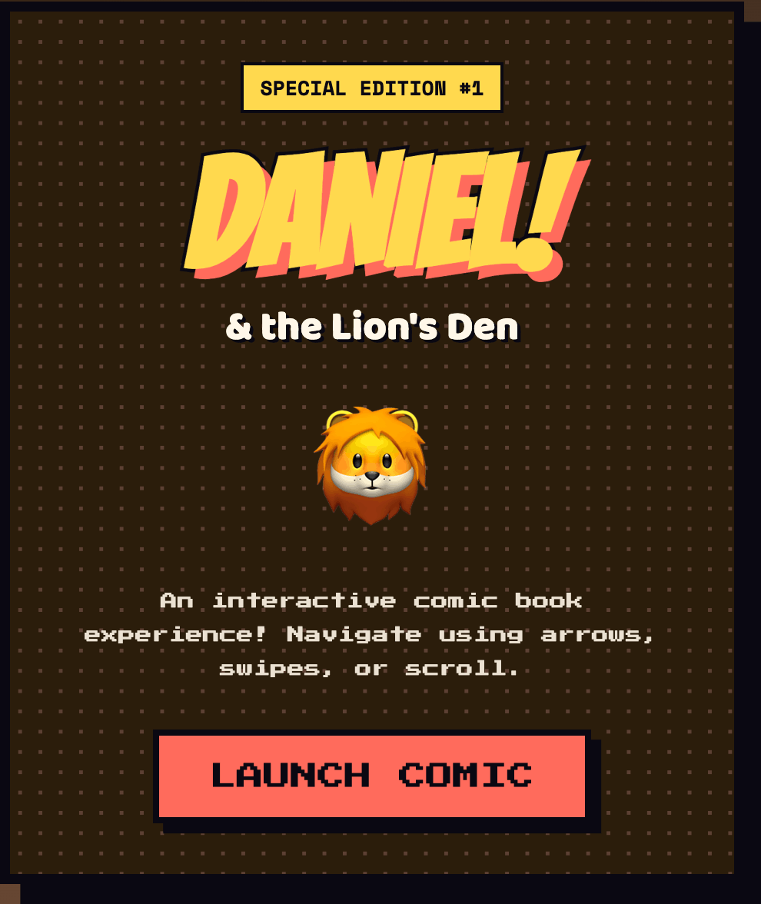
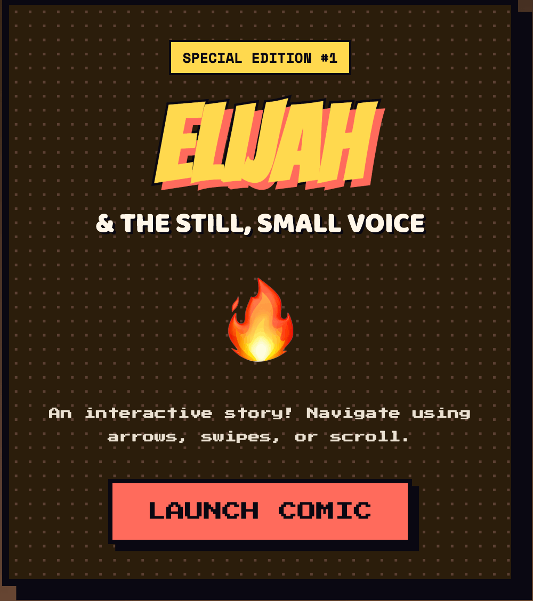
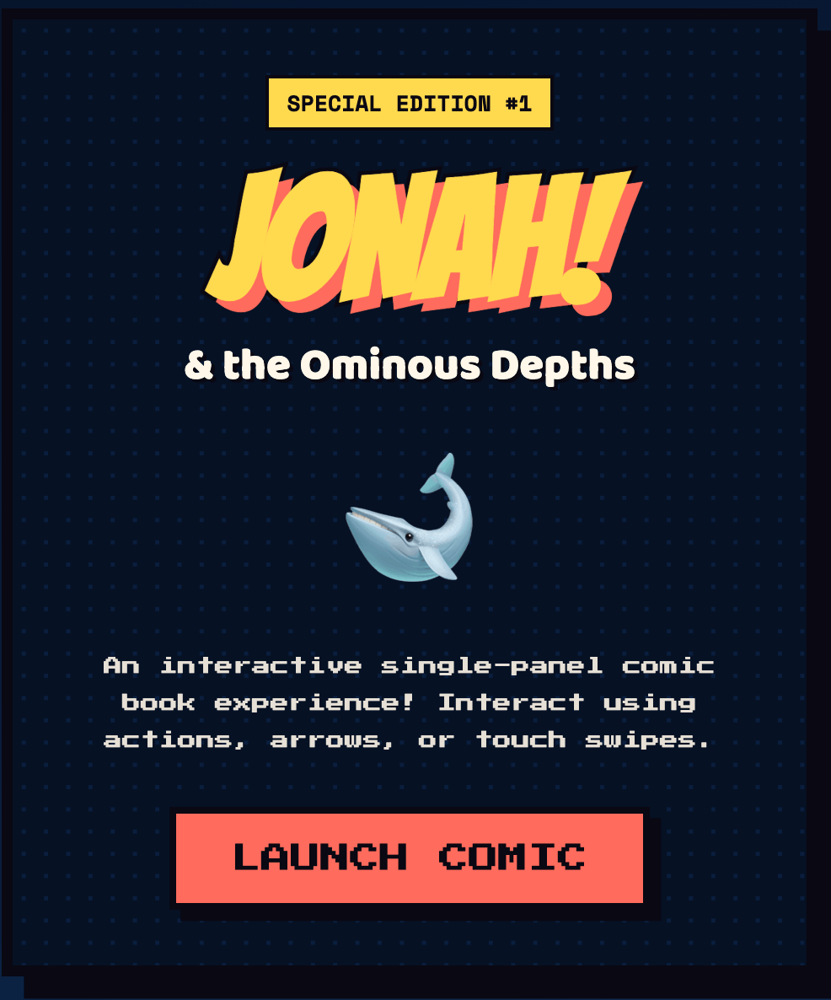
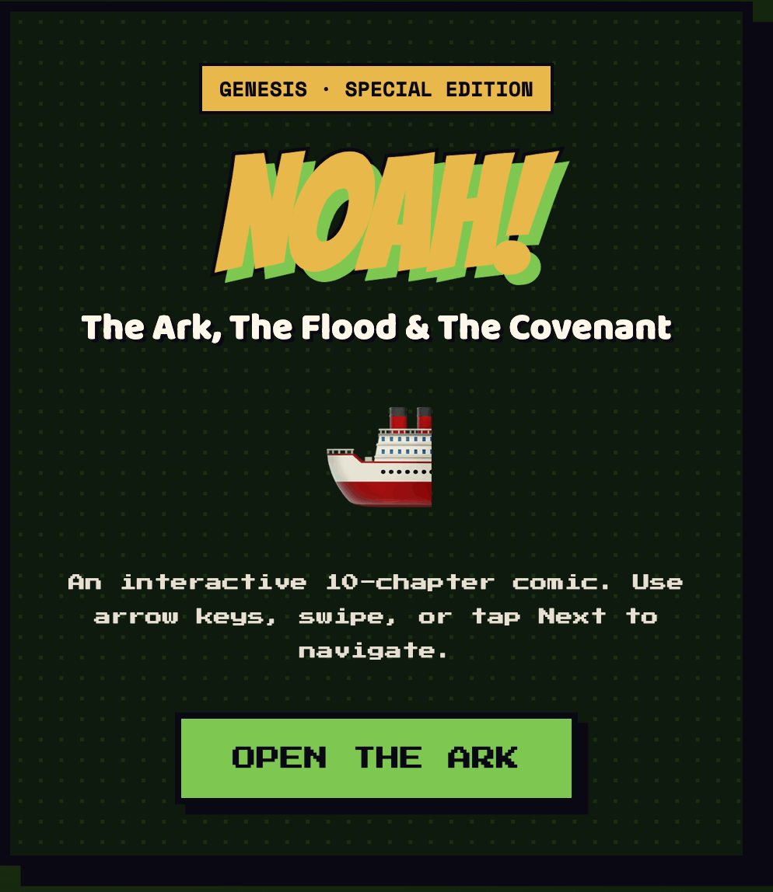

Structure
Episode-led
Long narratives are divided into short chapters with a clear beginning, dramatic turn and visual destination.
Case study / Interactive comics
A growing collection of browser-based comics that turns familiar biblical narratives into visual, paced and interactive reading experiences.
The brief
Bring classic Bible stories to the browser without flattening them into ordinary illustrated pages. Each comic needed its own visual world and dramatic rhythm, while the collection needed to remain simple to open, navigate and share.

Seven episodes move from the royal table and fiery furnace to the lions’ den and Daniel’s vision of four beasts. A long-form arc gives the collection room for recurring characters, escalating stakes and prophetic imagery.

Four chapters follow Elijah from the ravens at Cherith to Mount Carmel, the still small voice and the chariot of fire. The sequence shifts between spectacle and stillness to let pacing carry the emotional change.

Jonah’s four-part journey becomes a compact interactive arc: flight, storm, deliverance, Nineveh and the final lesson beneath the plant. Each scene keeps the reading action direct and cinematic.
Ten chapters trace Moses from the basket in the reeds through the Exodus, Sinai and the wilderness to a final view of the promised land. The episodic structure turns a vast narrative into clear, approachable moments.

Four scenes focus the story on its strongest visual symbols: the ark, the flood, the returning dove and the rainbow covenant. The result is a concise entry point into the wider collection.
Long narratives are divided into short chapters with a clear beginning, dramatic turn and visual destination.
The browser becomes the page turn. Readers control the rhythm while transitions, framing and motion guide attention.
Comic composition, expressive imagery and selective text make each episode understandable at a glance.
Every story is a shareable web experience, with no app store, account or specialist reader standing in the way.
The collection opens directly in a modern browser and keeps the path from index to story deliberately short.
New books and chapters can join the same catalogue without changing how readers discover or navigate the work.
Interaction supports the narrative’s people, places and turning points rather than competing with them.